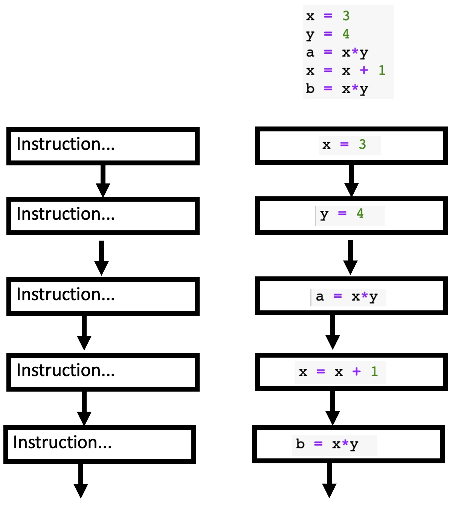
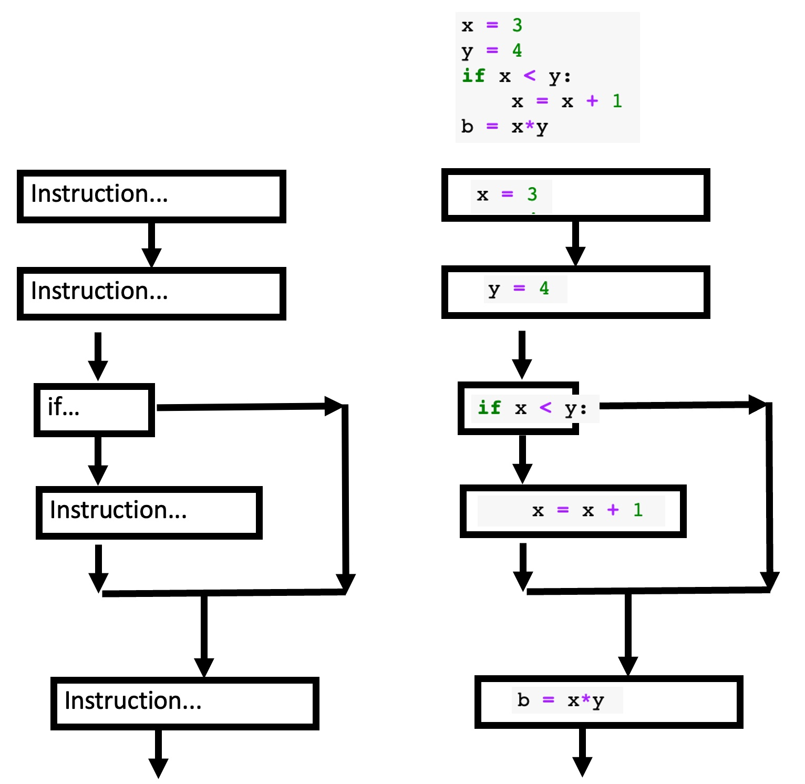
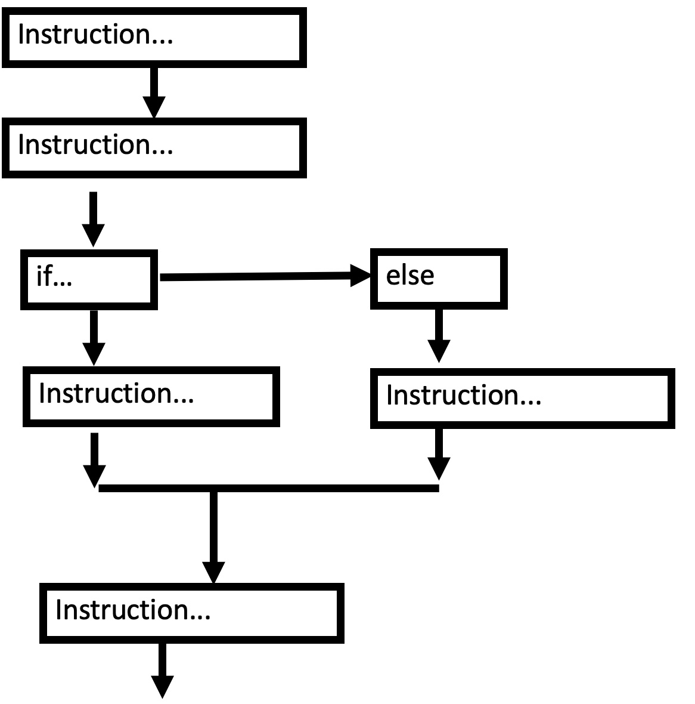
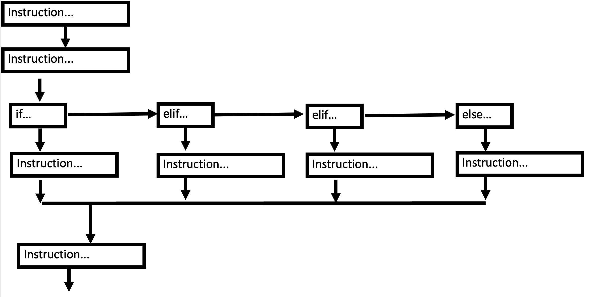
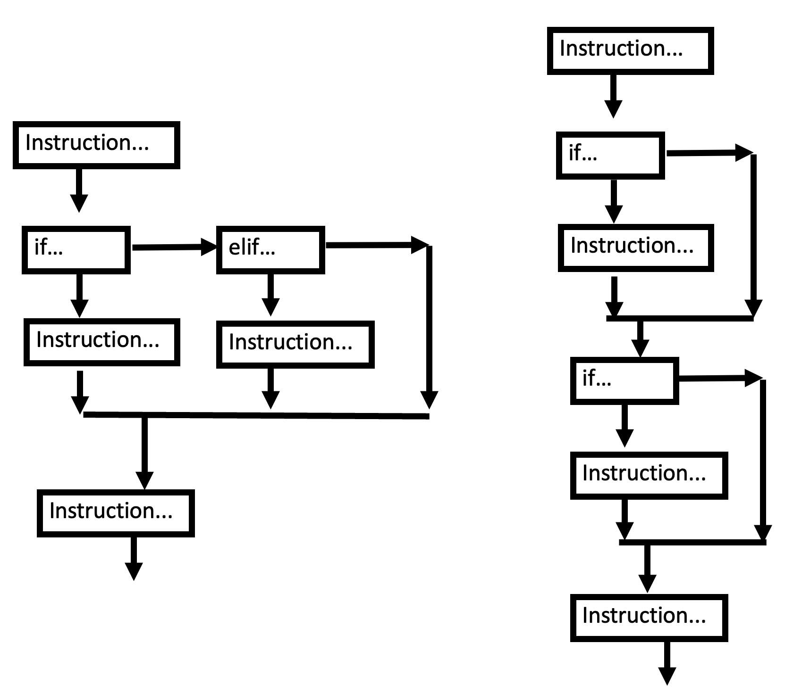

P02: Branching via conditional statement: if..elif..else..¶
Control flow.¶
Without any control flow commands, instructions are executed in a simple, linear order, as shown below:

Conditional allow the flow to branch.
Conditional statement¶
The basic control structure that allows branching is a conditional: do something only if a condition is met.
polite = False
if polite:
print("hello!")
print("it is a pleasure to meet you!")
print("My name is John")
My name is John
What this code is doing is:
set the variable
politeto the boolean value Trueif statement checks if the expression (
polite) evaluates to Trueif
politeis True then it runs the code block (indicated by indentation) comprised of two print statements;if
politeis not true (i.e., False) then it does not run those two print statements.
execution then moves on to the next line outside of the
ifblock (the 3rd print statement)
Code blocks¶
Note that here we are creating a code block via indentation. We would get different results with different indentation. Below, the indentation indicates that the second print statement is outside of the if block, and it will be run regardless of whether greet is true or false.
polite = False
if polite:
print("hello!")
print("it is a pleasure to meet you!")
print("My name is John")
it is a pleasure to meet you!
My name is John
Here is a simple diagram of what is going on:

else¶
If we wanted to print one thing if polite is true, and a different thing if polite is false, when we would want to set up an else block:
polite = False
if polite:
print("hello!")
else:
print("hey.")
print("My name is John")
hey.
My name is John
Here is a simple diagram of what is going on:

elif¶
Sometimes we want to have more than two branches, so we would want a control structure that can accomodate that:
verbose = True
polite = True
if verbose:
print('Good day to you, my friend!')
elif polite:
print('Hello!')
else:
print('hey.')
print('My name is John')
Good day to you, my friend!
My name is John
Note that execution of the if..elif..else statement takes the first available branch, and then does not execute the other branches. Here, verbose evaluated to True, so the first branch was taken and no other branches were (even though polite also evaluated to true). Thus an if..elif..else block sets up a mutually exclusive branching structure.
We can have as many elif after an if as we see fit, but it only makes sense to have one else. (Note that an else: is logically equivalent to elif True:)
Here is a simple diagram of what is going on:

if..elif vs if..if..¶
The mutually exclusive branching structure of if..elif is contrasted with a series of independent if statements, that each presents an optional branch, independent of the others.
Here is a simple diagram of the difference:

Consider the two blocks of code below. What will each print?
A = True
B = True
C = False
if A:
print('A is true')
elif B:
print('B is true')
elif C:
print('C is true')
A is true
if A:
print('A is true')
if B:
print('B is true')
if C:
print('C is true')
A is true
B is true
Note also that an else statement is attached to exactly one if..elif.. statement. So what will the code below do?
if A:
print('A is true')
if B:
print('B is true')
if C:
print('C is true')
else:
print('neither A nor B nor C is not true')
A is true
B is true
neither A nor B nor C is not true
Note that what the code above prints deviates from reality! The code runs just fine, but it will print “neither A nor B nor C are true” even when A or B are true! This is the trickiest sort of bug to fix, because the computer does not know that anything is wrong, so it cheerfully does the incorrect thing.
How would we fix the code above to do work correctly?
Logical operators¶
While working with a single boolean value can solve some problems, often we want to specify a more complicated logical expression by combining boolean values from many comparisons. For instance, to make the code above work, we need to figure out if A, B, and C are all False.
These kinds of boolean operations can be done with
A and B: returns True if both A and B are true.
A or B: returns True if either A or B are true.
not A: returns True if A is False.
if A:
print('A is true')
if B:
print('B is true')
if C:
print('C is true')
if not A and not B and not C:
# alternatively: not (A or B or C)
print('neither A nor B nor C are true')
A is true
B is true
Comparison operators¶
So far we have written if..else statements to evaluate based on pre-defined boolean variables, but a much more common scenario is to compare values, and define new boolean values that way. To this end, Python has a number of comparison operators:
A == B: returns True if A and B are equal
A != B: returns True if A and B are not equal
A < B (or A > B): return True if A is less than B (or greater than B)
A <= B (or A >= B): return True if A is less than or equal to B (or greater than or equal to B)
5 == 5.0
True
5 != 5.0
False
5 > 5
False
5 >= 5
True
Comparison operators on strings¶
Comparison operators are also overloaded for strings. Equality is case sensitive, and greater/less than correspond to unicode character index order.
'abracadabra' == 'abracadabra'
True
'Abracadabra' == 'abracadabra'
False
'a' > 'b'
False
'a' < 'b'
True
Case and unicode character index However, note that behavior for lower/uppercase letters and symbols may be unintuitive.
'A' < 'a'
True
'Z' < 'a'
True
'[' < 'a'
True
'Z' < '['
True
Comparison of characters is underpinned by comparing the UTF-8 integer code of each character. Generally, we won’t worry about the mechanics of character encoding, or the peculiarities of sorting strings by their unicode integers, but we can get a glimpse as to what is going on via the ord() function, which returns the unicode integer point for a given character.
ord('a')
97
Putting it together¶
We can combine all of these things together. For instance, let’s say we want to evaluate whether someone’s age is odd and between the numbers 17 and 39 (inclusive).
age = 43
if (age % 2) == 1 and age >= 17 and age <= 43:
print('age is odd and between 17 and 43')
age is odd and between 17 and 43
How would we modify this if we wanted to consider only ages outside this interval?
Properties of conditionals¶
All conditionals start with an
if, can have an optional and variable number ofelif’s and an optionalelsestatementConditionals can take any expression that can be evaluated as
TrueorFalse.At most one component (
if/elif/else) of a conditional will runThe order of conditional blocks is always
ifthenelif(s) thenelseCode is only ever executed if the condition is met